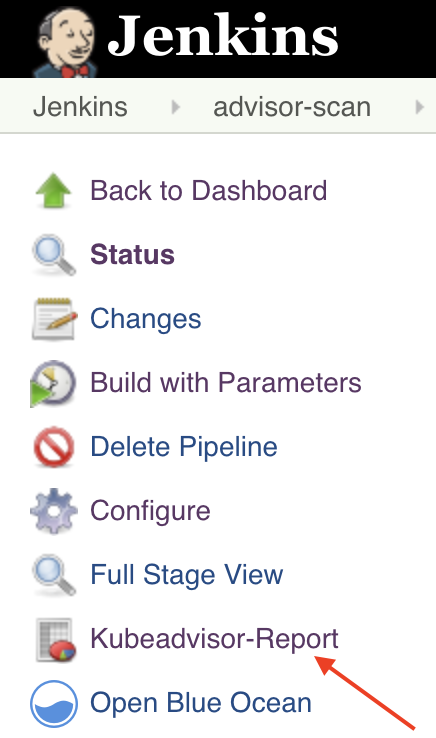

In this tutorial we will learn about Alcide Kubernetes Advisor, and how we can integrate it with Jenkins to implement continuous security and cluster hygiene for one or more Kubernetes clusters.

Alcide Advisor is an agentless Kubernetes audit, compliance and hygiene scanner that's built to ensure a friction free DevSecOps workflows. Alcide Advisor can be plugged in early in the development process and before moving to production.
With Alcide Advisor, the security checks you can cover includes:
- Kubernetes infrastructure vulnerability scanning.
- Hunting misplaced secrets, or excessive privileges for secret access.
- Workload hardening from Pod Security to network policies.
- Istio security configuration and best practices.
- Ingress Controllers for security best practices.
- Kubernetes API server access privileges.
- Kubernetes operators security best practices.
- Deployment conformance to labeling, annotating, resource limits and much more ...
- Jenkins 2
- Access from your Jenkins pipeline to your K8s cluster

Alcide Kubernetes Advisor runs against a kubernetes cluster and requires access to kubeconfig to authenticate & authorize itself to the cluster.
If your pipeline can run kubectl commands against the cluster successfully - you should be ready to initiate a scan.

Your Jenkinsfile
pipeline {
agent any
environment {
BUILD_TAG = "latest"
}
stages {
stage('Build + Test') {
steps {
echo "Build + Test your code"
}
}
stage('Deploy') {
steps {
script {
if (currentBuild.result == 'SUCCESS')
echo 'Deploying....'
else
echo 'Deployment skipped'
}
}
}
//Obtain the scanner
stage('Get Alcide kube-advisor binary') {
steps {
dir("kube-advisor") {
sh "curl -o kube-advisor https://alcide.blob.core.windows.net/generic/stable/linux/advisor"
sh "chmod +x kube-advisor"
}
}
}
//Obtain the scanner
stage('kube-advisor Scan'){
steps{
dir("kube-advisor") {
sh """#!/bin/bash
CURRENT_CONTEXT=`kubectl config current-context`
./kube-advisor --eula-sign validate cluster --cluster-context \$CURRENT_CONTEXT --namespace-include="*" --outfile kube-advisor-report.html
"""
// Archive the built artifacts
archive includes: "kube-advisor-report.html"
// publish html
publishHTML target: [
allowMissing: false,
alwaysLinkToLastBuild: false,
keepAll: true,
reportDir: ".",
reportFiles: "kube-advisor-report.html",
reportName: "advisor-report"
]
}
}
}
}
}
The pipeline will publish the scan results into your Build Artifacts under the advisor-report directory

In this codelab we added an automated scan of K8s cluster as an step in your Jenkins deployment pipeline.